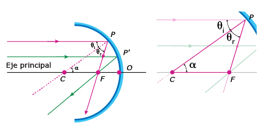

La óptica es la rama de la física que estudia el comportamiento de la luz, sus características y su interacción con los objetos. El estudio de la óptica permite profundizar en dos campos:
-
01
La óptica
Open or Close- Óptica física: explica fenómenos como los de la interferencia, la difracción y la polarización de la luz, debidos a la interacción con objetos materiales con dimensiones del orden de la longitud de onda de la luz.
- Óptica geométrica: es el estudio de los fenómenos producidos por la reflexión o la refracción de la luz, debidos a la interacción con objetos de dimensiones mayores a la longitud de onda de la luz. Este será el enfoque de este tema.
Para comprender cómo se explica la interacción de la luz con los objetos de gran tamaño (con respecto a la longitud de luz) es importante conocer la evolución del concepto y las teorías que se han formulado para entender los fenómenos que genera.
Durante muchos años, los estudiosos del tema han querido hallar respuestas sobre el fenómeno de la luz y de su naturaleza. En el año de 1704, el físico inglés Isaac Newton (1642-1727) afirmó que: "la luz es un conjunto de partículas microscópicas o corpúsculos que se propagan a gran velocidad en línea recta", propuesta que es conocida como la teoría corpuscular.
Por esa misma época, el físico holandés Christian Huygens (1629-1695) propone otro modelo, el cual pudo dar respuestas a algunos fenómenos que la teoría de Newton no podía explicar. Este modelo, llamado teoría ondulatoria, consideraba a la luz como una onda mecánica, la cual necesitaba un medio para su propagación, el inconveniente era saber cuál era ese medio, que no se podía observar. Para dar solución a esta pregunta, estos científicos retomaron una teoría de Aristóteles que proponía la existencia del éter, un medio o fluido elástico, totalmente ligero, que ocupaba todo el espacio. Esta teoría sirvió para dar respuestas a fenómenos como la interferencia, la difracción y la polarización de la luz.
La idea de que la luz era una onda fue reforzada por James Clerk Maxwell (1831-1879) quien demostró, en 1862, que la luz conducía energía a través de campos eléctricos y magnéticos oscilantes que viajaban a una velocidad de 3 x 108 m/s, en el éter. Sin embargo, para el año de 1887, el físico Heinrich Hertz generó por primera vez ondas electromagnéticas, demostrando que este tipo de ondas no necesitaba un medio para la propagación de energía y que tenía asociada una longitud de onda.
Más adelante, en 1905, Albert Einstein propuso que la luz interactuaba con la materia, no como onda, sino como pequeños paquetes de energía llamados fotones. Sin embargo, no descartó la propagación de la luz como onda; al contrario, dedujo que en algunos momentos la luz se comporta como onda y en otros como una partícula.
Profundiza
James Clerk Maxwell (1831-1879): notable científico escocés que, en el campo de la física, desarrolló la teoría electromagnética clásica. Mediante observaciones y experimentos pudo calcular la velocidad de los campos eléctricos y magnéticos oscilantes, que coincide con la velocidad de la luz.
Con el fin de facilitar el estudio de la óptica geométrica y el análisis de la interacción de la luz con la materia en escalas perceptibles a simple vista, simbolizaremos la luz como un rayo o línea continua, con el fin de determinar el sentido y la dirección del haz de luz.
Principio de Fermat
Cuando no hay nada que obstruya el paso de la luz, podemos decir que esta escoge la trayectoria más eficiente para pasar de un punto A a un punto B. Esta idea fue formulada en 1650 por el físico francés Pierre Fermat, quien establece que entre las posibles trayectorias que puede tomar la luz entre dos puntos, siempre tomará la que le tome el tiempo más corto; esto se conoce como el principio de Fermat del tiempo mínimo.
01.1Consolidación
Actividades para consolidar lo que has aprendido en esta sección.
Practica
-
02
Los espejos
Open or CloseDiariamente utilizamos espejos, ya sea para mirarnos antes de salir de casa, o en el auto para visualizar el tráfico que está a nuestro alrededor; también los usan en el supermercado, como una forma de controlar las estanterías; además, los odontólogos los utilizan para ubicar y observar puntos de difícil acceso a simple vista; así, se podrían nombrar otras situaciones donde los espejos son necesarios para hacer nuestras labores diarias. En física, a toda superficie capaz de reflejar una imagen se le denomina espejo.
Recuerda
¿Has visto, cuando estás frente a un lago o a un depósito de aguas tranquilas, que siempre vemos el paisaje que está sobre el nivel de las aguas? Esto es causado por el fenómeno de la reflexión. Cuando la luz llega a estas superficies no todos los rayos incidentes son absorbidos y pasan al agua, ciertos rayos son "expulsados" por la misma superficie. El rayo que choca contra la superficie se llama incidente, y el que sale de la misma se denomina reflejado. La dirección y el sentido de esta reflexión dependen de las características de la superficie; los ángulos de incidencia y de reflexión tienen el mismo valor.
El fenómeno de reflexión de la luz, así como el principio del mínimo tiempo de Fermat, permiten calcular las distancias y el tamaño de las imágenes que se observan en un espejo, ya sea plano o esférico.
Profundiza
02.1Los espejos planos
Si nos ponemos frente a una puerta de madera brillante, la imagen que observamos no es tan clara como la que veríamos en un espejo. Esto obedece a que los rayos de luz en la puerta se reflejan en todas las direcciones; mientras que en los espejos, los rayos reflejados siempre son paralelos entre ellos de tal manera que reproducen nuestra imagen.
Es importante tener en cuenta los términos que se usan para describir la reflexión en los espejos: rayo incidente, rayo reflejado, ángulo de incidencia, ángulo de reflexión, normal; así como la ubicación del espejo.
Cuando un rayo o haz de luz se refleja en un espejo, este obedece dos reglas simples:
- El ángulo de reflexión es igual al ángulo de incidencia. El rayo que incide en el espejo se refleja con el mismo ángulo que incide sobre este.
- El rayo de incidencia, el reflejado y la normal se encuentran en el mismo plano.
Millones de rayos salen del objeto, sin embargo, en este ejemplo solo señalamos dos. Los rayos reflejados llegan al ojo y este observa que la imagen del objeto está detrás del espejo; esta recibe el nombre de imagen virtual.
Imagina que la lámpara de la imagen está frente a un espejo y emite rayos de luz en todas las direcciones, cuando estos rayos llegan al espejo se reflejan con ángulos iguales a los de incidencia. Estos divergen al salir de la lámpara y luego divergen al reflejarse en el espejo.
Los rayos que vemos parecen ser emitidos por una lámpara que se encuentra dentro del espejo (donde convergen o se unen las líneas punteadas); a esta imagen de la lámpara se le llama imagen virtual, debido a su ubicación. Además, se encuentra a la misma distancia del espejo; como el objeto está delante de este, también es de igual tamaño. Si se tratara de dos gemelos idénticos, se encontrarían uno frente al otro, con un punto de referencia equidistante entre ellos que sería el espejo. Sin embargo, si uno de los gemelos levanta una mano, por ejemplo, la derecha, el otro levantaría la mano izquierda, lo que significa que la imagen virtual tiene lateralidad invertida.
Espejos planos con ángulos
¿Alguna vez te has observado entre dos espejos planos que forman cierto ángulo?, ¿cuántas imágenes pudiste ver? Pues bien, para calcular el número de imágenes que se obtienen en casos como este utilizaremos la siguiente fórmula:

Al disponer dos espejos enfrentados, con cierto ángulo, la cantidad de imágenes que se observan dependen del ángulo que exista entre ellos.
02.2Los espejos esféricos
En algunas situaciones, los espejos planos no permiten observar ciertas cosas que otra clase de espejos sí; por ejemplo, los espejos de vigilancia forman imágenes más pequeñas pero abarcan más espacio visual, los espejos para el maquillaje nos permiten ver una imagen más grande y observar detalles de nuestro cutis, estos espejos reciben el nombre de esféricos o curvos.
Los espejos esféricos han sido de gran ayuda en la investigación, ya que son utilizados en la construcción de los telescopios y microscopios, siendo protagonistas en los grandes descubrimientos realizados por la humanidad.
Los espejos esféricos se construyen a partir de una sección de esfera o casquete esférico de una superficie pulimentada. Dependiendo de si el objeto real se refleja dentro o fuera del casquete podemos hablar de espejos convexos o cóncavos, respectivamente.
Los espejos convexos se caracterizan por tener una superficie pulimentada en la parte externa de la esfera. En los cóncavos, su parte reflectiva es la interna. Si el centro de curvatura queda dentro del espejo este es convexo, pero si el centro de curvatura se ubica por fuera de este, hacemos referencia a un espejo cóncavo.
En la anterior imagen observamos una línea horizontal llamada eje principal, dentro de este eje se encuentran tres puntos importantes: C es centro de curvatura, O es centro geométrico del espejo y F es el foco de los espejos.
El foco en los espejos curvos
Para los espejos cóncavos, los rayos que salen del objeto paralelos al eje principal, reflejados en el espejo y que convergen en un solo punto, ubican el foco; este es real pues se encuentra fuera del espejo. En los espejos convexos, el foco lo construyen las prolongaciones de los rayos convergentes reflejados por el espejo, que salen del objeto paralelos al eje principal, el cual es virtual.
Los radios que se forman en una circunferencia son perpendiculares a las líneas tangentes en cada punto de la misma, estos permiten explicar que las líneas normales de cada rayo incidente y reflejado en el espejo se intersectan en el eje principal y forman el punto llamado centro de curvatura.
Para hallar la distancia entre el foco F y el centro geométrico del espejo O, llamada distancia focal, obsevemos la imagen que viene a continuación:
Para conocer las imágenes debemos determinar en dónde se ubican geométricamente el centro de curvatura, el foco y la distancia focal. Las notaciones de cada una de estas características son válidas tanto para los espejos cóncavos como para los convexos.
Tengamos en cuenta el triángulo PCF, de este podemos determinar lo siguiente:
- Los ángulos ?i y ?r son iguales debido a las leyes de la reflexión.
- Los ángulos ? y ?i son congruentes, por alternos internos entre paralelas.
- Y, por tanto, los ángulos ? y ?r son congruentes por transitividad.
Como dos de los ángulos del triángulo PCF son iguales, es un triángulo isósceles, y por esto, sus lados CF y PF también lo son. Al acercar el punto P hacia O sobre la superficie del espejo, la distancia PF tiende a ser la distancia focal f y CF también.
De esta manera, si el radio R es igual a CO, tenemos que:

Entones,

o lo que es igual,

Esto es válido tanto para los espejos cóncavos como para los convexos.
02.3Formación de imágenes en los espejos esféricos
Los espejos curvos tienen la ventaja de que, dependiendo de dónde se ubique el objeto, la imagen reflejada puede variar de sentido, posición y tamaño. Pero antes de observar cómo son estas imágenes y cómo se pueden formar es necesario conocer cuatro rayos:
- El primero sale del objeto, paralelo al eje principal, se refleja en el espejo y pasa por el foco.
- El segundo sale del objeto, pasa por el foco y se refleja en el espejo paralelo al eje principal.
- El tercero sale del objeto, pasa por el centro de curvatura y se refleja siguiendo el mismo centro de curvatura.
- El cuarto rayo sale del objeto sobre el eje principal, se refleja en el espejo pasando por el mismo eje principal.
Dependiendo del lugar donde coloquemos el objeto con respecto al espejo obtendremos una imagen, que puede ser real o virtual, o sea que se forma por fuera o por dentro del espejo, respectivamente. Puede ser también una imagen invertida o derecha, de menor o mayor tamaño.
Para los espejos cóncavos tenemos cinco situaciones, dependiendo de dónde coloquemos el objeto, como se describe en la siguiente tabla:
Formación de las imágenes en los espejos cóncavos Ubicación del objeto Características de la imagen Entre el infinito y centro de curvatura C Es real, invertida, de menor tamaño y se forma entre el centro de curvatura C y el foco F En el centro de curvatura C Es real, invertida, de igual tamaño y se forma en el centro de curvatura C Entre el centro de curvatura C y el foco F Es real, invertida, de mayor tamaño y se forma entre el centro de curvatura C y el infinito En el foco F No se produce imagen Entre el foco F y el espejo Es virtual, derecha y de mayor tamaño Se observan diferentes casos para las imágenes reflejadas en los espejos cóncavos. Es importante tener en cuenta que no existe un cuarto caso pues no se forma imagen cuando el objeto está en el foco.
Para los espejos convexos solo se da un tipo de imagen. Debido a que el centro de curvatura C y el foco F se encuentran dentro del espejo y el objeto solo se puede colocar fuera de este decimos que el objeto se ubica entre el infinito y el espejo. Utilicemos los siguientes rayos para poder identificar las características de la imagen reflejada:
- El rayo que parece ser emitido por el foco dentro del espejo, pero que es la prolongación del rayo reflejado por el espejo y que se emite desde el objeto, paralelo al eje principal.
- La prolongación del rayo que se emite del objeto y que pasa por el centro de curvatura y se refleja siguiendo la misma trayectoria.
- El rayo que pasa por el eje principal sin desviarse dentro del espejo.
Con estos rayos se puede observar que la imagen que se forma es virtual, derecha, de menor tamaño y se encuentra entre el espejo y el foco F.
Los espejos convexos solo pueden proyectar una imagen virtual dentro del espejo, de menor tamaño y derecha, la cual se ubica entre el espejo y el foco F.
A fin de hallar la ecuación para los espejos cóncavos y convexos consideremos tres ecuaciones que salen del primer caso de los espejos cóncavos, y son:


Donde:
di: distancia del espejo a la imagen.
do: distancia del objeto a la imagen.
f: distancia focal.
R: radio de curvatura.
ho: tamaño del objeto.
hi: tamaño de la imagen.Si reemplazamos la ecuación (3) en la (2) se obtiene:

Ahora, reemplacemos las ecuaciones (1) y (5) en la ecuación (4):

Supongamos que en la imagen del primer caso, la de los espejos cóncavos, existe un rayo que sale del extremo de la flecha (objeto), refleja en el punto O del espejo y pasa por la imagen. De esta manera, se forman dos triángulos semejantes pues comparten dos ángulos iguales: DEO y GHO. Así, tenemos:

Reemplacemos la ecuación (7) en la (6)

Luego, reemplacemos el valor de R por 2f (recordemos la distancia focal y su relación con el radio del espejo).
De esta manera despejamos y obtenemos:

La relación entre los tamaños de la imagen y el objeto, y la distancia de estos al espejo la llamamos aumento y se expresa así:

Respecto al aumento es importante mencionar los signos que se deben utilizar:
- Cuando el objeto, la imagen y el foco están fuera del espejo o, en otras palabras, son reales o están al lado reflejante, el aumento tiene signo positivo. Si se encuentran dentro del espejo o al otro lado de la zona reflectante tiene signo negativo.
Espejo de vigilancia
Ejemplo
El dueño de una tienda necesita vigilar su mercancía, así que decide comprar un espejo con distancia focal de 3 m. Si una persona se encuentra a 8 m del espejo, ¿qué características tiene la imagen de la persona?, ¿a qué distancia se encuentra del espejo? Y si la persona mide 1,60 m ¿qué tamaño tendrá su imagen?
Solución
- Para saber qué características tiene la imagen recordemos que los espejos convexos forman imágenes virtuales, derechas y de menor tamaño.
- Para hallar la distancia que existe entre la persona y el espejo usamos la siguiente ecuación:

Como se utiliza un espejo convexo, la distancia focal f es negativa:


Por tanto, el resultado es:

- Si una persona mide 1,60 m, podemos hallar la relación entre el tamaño de la imagen y el objeto utilizando la siguiente ecuación:


Esto muestra que en el espejo la imagen de la persona es 3/11 el tamaño de la misma.
02.4Consolidación
Actividades para consolidar lo que has aprendido en esta sección.
Practica
-
03
Lentes
Open or CloseRecordemos que Maxwell halló la velocidad de la luz en el vacío a 300?000 km/s; sin embargo, dependiendo del material en el que viaje la luz esta presenta diferente rapidez, sin superar la que lleva en el vacío. Por ejemplo, en el aire es un poco menor a la que lleva en el vacío, y en el agua es aproximadamente las tres cuartas partes de esta, mientras en el diamante equivale a las dos quintas partes de la misma.
Recuerda
Cuando observas una cuchara dentro de un vaso con agua, parece que esta se dobla; este fenómeno de la luz se explica desde la refracción. Esta ocurre cuando los rayos de luz son desviados oblicuamente al viajar de un medio transparente a otro, y varían su velocidad. Experimentalmente se observa que la luz toma la trayectoria más larga cuando llega a un medio de separación; por ejemplo, del aire al agua. Sin embargo, esta trayectoria es consecuente con el principio de Fermat, pues es la que permite que la luz tome menos tiempo en llegar de un punto A en el aire a un punto B en el agua.
Si un rayo de luz incide perpendicular a la superficie de separación de los medios, por ejemplo, si va del punto A al punto B, sigue una línea recta. Pero si va del punto A al punto C, toma la trayectoria que le implique menor tiempo atravesar el medio. Si siguiera una línea recta no se cumpliría el principio de Fermat.
Cuando un rayo de luz incide sobre un medio más denso del que se propagaba inicialmente, el ángulo con el que se refracta ?r es menor que el ángulo incidente ?i.
El físico holandés Willebrord Snell (1580-1626) postuló la ley que establece la relación entre el ángulo de incidencia y el refractado, denominada ley de Snell, así:

Donde: n1 y n2 son los índices de refracción y están dados experimentalmente como resultado de la relación entre la velocidad de la luz en el vacío (c) y la velocidad en el medio donde se refractan (vm):

Observa algunos índices de refacción de la luz en distintos medios; ten presente que son adimensionales debido a que no tienen unidades.
Índices de refracción en algunas sustancias Vacío 1 Aire (en condiciones normales) 1,0002926 Alcohol etílico 1,361 Glicerina 1,473 Cuarzo 1,544 Vidrio común 1,544 Diamante 2,42 Existen unos dispositivos transparentes que permiten el cambio de trayectoria de la luz, estos son las lentes. Estas son hechas generalmente de vidrio o plástico, pues estos materiales permiten que la luz los traspase, además se componen de la unión de dos superficies esféricas, planas o la combinación de las dos.
Clasificación de las lentes
Las lentes se pueden clasificar según como sus rayos se comporten después de traspasarlas, de esta manera tenemos dos clases de lentes:
- Las convergentes: se caracterizan porque al ser atravesadas por rayos de luz paralelos, los dirigen o convergen en un solo punto. Estas lentes se caracterizan porque son más anchas en su centro que en los extremos.
- Las divergentes: son aquellas que al atravesar los rayos de luz paralelos los divergen o los desvían pareciendo que los rayos de luz salen de un mismo punto. Estas lentes son más gruesas en sus extremos que en su centro.

Podemos observar que las lentes llevan su nombre dependiendo de las superficies que unen, pero recuerda que las convergentes focalizan los rayos de luz que las atraviesan en un punto y son más gruesas en su centro, y las divergentes separan los rayos de luz como si fuera un foco luminoso el que las emitiera, además son más delgadas en el centro.
Profundiza
Practica
03.1Construcción de imágenes para lentes
Para comprender cómo convergen o divergen los rayos de luz debemos identificar algún elemento geométrico, así como lo hicimos inicialmente para los espejos; observa la siguiente imagen:
Observa que, a diferencia de los espejos curvos, la lente tiene dos focos F y F´ y, por tanto, dos radios R1 y R2, pues cada superficie de la lente hace parte de una circunferencia. Sin embargo, similar a los espejos se ubica un eje principal y un centro óptico O ubicado en la mitad de la lente, además de la distancia focal f que es la distancia entre el foco y el centro de la lente.
03.2Construcción de imágenes en lentes convergentes
Consideremos los siguientes rayos teniendo en cuenta los elementos ubicados dentro de la lente convergente:
- El rayo que sale de la parte superior del objeto, paralelo al eje principal, llega a la lente, se refracta y pasa por F´.
- Un rayo que sale de la parte superior del objeto, pasa por el O sin alterar su camino. Considerando que la lente es delgada podemos hacer tal afirmación.
- Un rayo que sale de la parte superior del objeto, pasa por F, llega al lente, se refracta y sigue paralelo al eje principal.
Como vimos en los espejos esféricos, la imagen se formará dependiendo de dónde coloquemos el objeto fuente de los rayos de luz que atraviesan la lente. De esta manera, los casos que se pueden presentar para una lente convergente son:
- Cuando el objeto se ubica a más del doble de la distancia focal, su imagen es real, invertida y menor que el objeto.
- Cuando el objeto se encuentra exactamente en el doble de la distancia focal, su imagen es real invertida y del mismo tamaño que el objeto.
- Cuando el objeto se localiza entre dos veces la distancia focal y el foco F, su imagen es virtual, invertida y de mayor tamaño que el objeto.
- Cuando el objeto se ubica en el foco F no se produce imagen o, mejor, se produce pero en el infinito.
- Cuando el objeto se ubica entre el foco F y la lente, la imagen que se produce es derecha y de mayor tamaño que el objeto; sin embargo, en este caso los rayos refractados por la lente no se intersectan, sino son sus prolongaciones antes de la lente las que lo hacen. Esto es lo que sucede con una lupa.
Las diferentes imágenes construidas por las lentes convergentes dependen de la posición del objeto con respecto a la lente. Estas lentes deben considerarse muy delgadas para evitar que el rayo que pasan diagonalmente por el centro geométrico de la lente no se desvíe.
03.3Construcción de imágenes en lentes divergentes
Como ocurre con las lentes convergentes, necesitamos utilizar ciertos rayos para poder identificar las imágenes que las lentes divergentes producen. Estos rayos cambian, pues recuerda que las lentes divergentes separan los rayos al pasar por ellas. De esta manera, los rayos que utilizaremos son:
- Se construye el primer rayo que sale de la parte superior del objeto, este rayo debe ser paralelo al eje principal, pasa por la lente y se refracta divergiéndose. La prolongación de este se intersecta con el foco F.
- De la parte superior sale un rayo que pasa por el centro de la lente y no se refracta, considerando que la lente es delgada.
- Se construye otro rayo que se dirige hacia el foco F´; cuando pasa por la lente se refracta cambiando su dirección y diverge paralelo al eje principal. Su prolongación haría aparte de la imagen creada por la lente.
Los rayos que se intersectan en las lentes divergentes son las prolongaciones de los rayos que se separaron divergieron al refractarse al atravesar la lente. De esta manera, la imagen que se produce es virtual, derecha y de menor tamaño.
03.4Ecuaciones para las lentes
La ecuación que debemos hallar relaciona la distancia focal (f), el tamaño de la imagen (hi), el tamaño del objeto (ho), la distancia de la imagen (di), y del objeto al centro de la lente (do). No sobra mencionar que es importante considerar una lente muy delgada.
A fin de hallar la ecuación para las lentes se dibujan los dos rayos que se observan en la imagen: 1) el que sale paralelo al eje principal se refracta en la lente y cambia su dirección hacia el foco F´, y 2) el que sale del objeto pasa por el centro geométrico O del espejo y no se desvía.
Los triángulos MNF y FQL, como son opuestos por el vértice, son semejantes, por tanto:


Debido a la semejanza de los triángulos, podemos hacer la siguiente proporción:

Los triángulos LQN y KPN también son semejantes por ser opuestos por el vértice debido al ángulo N que comparten, se establece la siguiente proporción:


Al reemplazar igualando las ecuaciones (1) y (2), tenemos:

Despejando y reorganizando los términos obtenemos la siguiente ecuación:

Al hacer la relación entre los tamaños y las distancias al centro de la lente, podemos hallar el aumento de la lente

Convenciones de signos para las ecuaciones de las lentes
Así como en los espejos, las lentes también tienen signos de convención dependiendo de la ubicación del objeto y la imagen, además de la lente, si es convergente o divergente, por tanto:
- La distancia focal es positiva para las lentes convergentes y negativa para las divergentes.
- La imagen es positiva si se encuentra al lado en el que salen los rayos refractados por la lente, de lo contrario es negativa.
- El tamaño de la imagen es positivo si se encuentra sobre el eje principal y negativo si se encuentra debajo del eje.
Otra ecuación que podemos usar en las lentes es la utilizada por optómetras y oftalmólogos para calcular la intensidad de convergencia o divergencia de una lente, utilizada para la fabricación de lentes de gafas y lentes de contacto. A esta cantidad se le llama potencia P y equivale al inverso de la distancia focal; la unidad de la potencia P es la dioptría y equivale a 1 m-1, la ecuación es:

Cuando hay dos o más lentes alineadas una tras otra, la potencia de la lente formada por esas dos será:
 03.5
03.5Consolidación
Actividades para consolidar lo que has aprendido en esta sección.
Practica
-
04
Instrumentos ópticos
Open or CloseLos instrumentos ópticos han ayudado a la evolución de la ciencia en campos como la astronomía, la física, la biología y la medicina. Además, han permitido que el ser humano pueda corregir ciertas enfermedades y deformaciones en el ojo. Utilizar espejos y lentes nos permite modificar el tamaño de las imágenes, su distancia, y concentrar y dispersar los rayos de luz que pasan por estas para utilizarlas a nuestra conveniencia. Conozcamos el ojo humano y sus características.
04.1El ojo humano
De este órgano parte la idea de crear una cámara fotográfica o una de video; sin embargo, no es posible comparar su estructura con la de estos instrumentos. El ojo es el órgano del sentido de la vista, el que nos permite observar lo que nos rodea. ¿Te has preguntado alguna vez cómo hacemos para ver? Comencemos enfocando un objeto, la luz reflejada por el objeto atraviesa la córnea, compuesta por un tejido transparente, y se refracta por primera vez. Detrás de la córnea se encuentra un fluido llamado líquido acuoso que difracta los rayos que han pasado por la córnea previamente.
Nuestro ojo, para regular la cantidad de luz que puede pasar por él, cuenta con la pupila y el iris (este último le da el color característico a los ojos). Seguido está el cristalino, que es una lente biconvexa -por tanto, es convergente-, cuya estructura elástica, por medio de los músculos ciliares, puede cambiar su radio de curvatura permitiendo enfocar los objetos que vemos. Luego, los rayos luminosos atraviesan otro fluido llamado humor vítreo, refractándolos de tal manera que llegan a la retina.
La retina funciona como una pantalla en donde la imagen del objeto es real, de menor tamaño e invertida. Aquí se encuentran las células receptoras como los bastoncillos y conos; los primeros son susceptibles a los cambios de intensidad de la luz y los otros son los responsables de separar el color; desde aquí se envía la información de la imagen al nervio óptico y de este al cerebro. Finalmente, este órgano es el que hace que percibamos los objetos derechos.
El ojo humano y sus partes. El ojo es la cámara más perfecta, pero se puede dañar, por eso es importante cuidar cada una de sus partes.
Este engranaje de lentes, fluidos, músculos y nervios puede presentar averías, que pueden ser congénitas o simplemente por su mal uso o desgaste. A continuación se describen algunas enfermedades causadas por alguna malformación del globo ocular, que se pueden mejorar con el uso de anteojos o lentes de contacto especialmente diseñados para cada problema:
- La miopía: en el ojo miope el globo ocular es más largo (parecido a una elipse), por tanto, la imagen no llega a la retina. Para este defecto se utilizan lentes divergentes.
- Hipermetropía: el globo ocular del hipermétrope es más corto (parecido a un óvalo), por tanto, la imagen se enfoca detrás de la retina. Como solución a este defecto se utilizan lentes convergentes.
- Astigmatismo: el ojo con astigmatismo tiene la superficie de la córnea o del cristalino irregular, lo que produce una imagen borrosa. Para corregirlo se utilizan lentes cilíndricas.
Otra enfermedad de los ojos es la presbicia o vista cansada, que se presenta en personas mayores de los cuarenta años. Se debe a la fatiga de los músculos ciliares o la pérdida de flexibilidad del cristalino, e impide la correcta convergencia de las imágenes. Por tanto, las personas que padecen de esta enfermedad deben alejar el objeto para poder lograr converger la imagen, para esta enfermedad se utilizan lentes convergentes.
Existen más enfermedades que actualmente se pueden tratar con lentes o cirugías, como la cirugía láser. Sin embargo, hay otras que no se arreglan con lentes ni con cirugía como el daltonismo, la catarata y el glaucoma.
Profundiza
Practica
04.2Cámara fotográfica
En una cámara fotográfica se utiliza una lente convexa para colocar una imagen real invertida y más pequeña en una película fotosensible. Antes de llegar a esta, los rayos luminosos de la imagen se pasan por una abertura compuesta por un diafragma que es un agujero graduable que permite modificar la cantidad de luz que pasa.
Un elemento importante es el obturador, de determinar el tiempo de paso de la luz para que se pueda hacer un registro de la imagen sobre la película.
Al realizar una comparación con el ojo humano, la lente convergente de la cámara, la abertura o diafragma y la película fotosensible serían la córnea y el cristalino, el iris y los músculos ciliares y la retina, respectivamente.
04.3La lupa
Para observar detalladamente a un objeto lo debemos acercar más para que la retina pueda ver la imagen ampliada. Esto quiere decir que si tenemos un objeto a 50 cm de longitud y lo acercamos a la mitad, lo veremos el doble de su tamaño inicial.
La lupa es una lente biconvexa que se ubica entre el ojo y el objeto para colocar una imagen del objeto en la retina de mayor tamaño que el mismo objeto. Para poder ver la imagen de mayor tamaño es necesario que ubiquemos nuestros ojos entre el foco y la lupa para ver la imagen aumentada, virtual y derecha.
04.4Consolidación
Actividades para consolidar lo que has aprendido en esta sección.
-
05
Competencias
Open or ClosePon a prueba tus capacidades y aplica lo aprendido con estos recursos.
-
Fin de unidad:
Open or Close
repaso